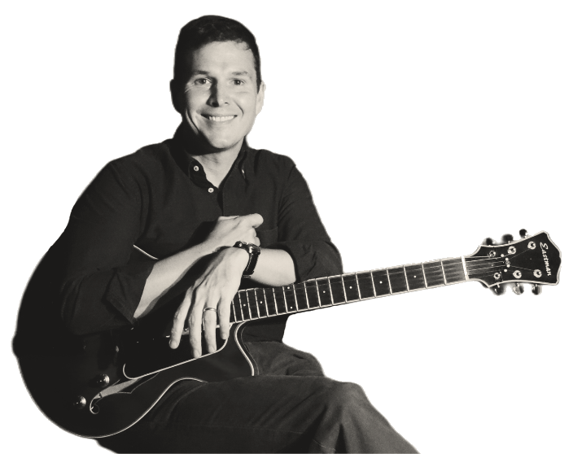

Max Robertson
Austin, TX–based guitarist and mandolinist performing jazz/swing, bluegrass/Americana, and Brazilian music.
Available for performances, private events, and lessons.
Current Projects
- Max Robertson Duo/Trio/Quartet: Jazz standards, pop/rock/soul/western covers
- Odeon: traditional Brazilian choro and samba
- The Gumption: Western swing, country, bluegrass
- Tatyana & the Night Owls: Vocal jazz
- Atlas Trio: Classical and salon music